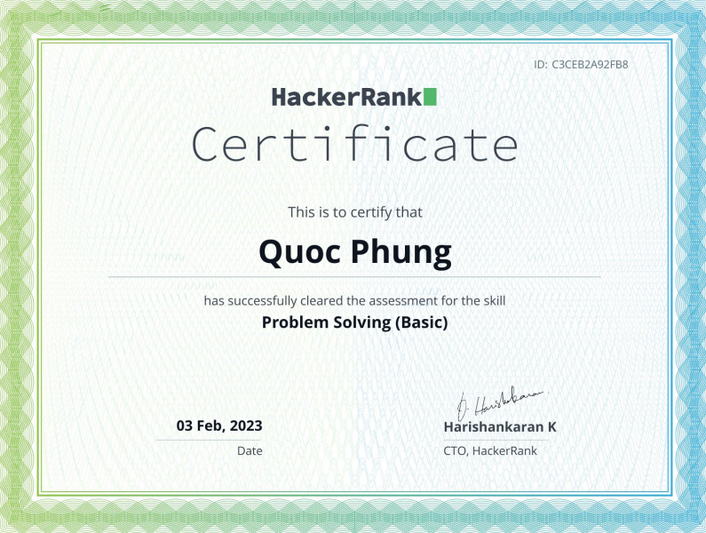
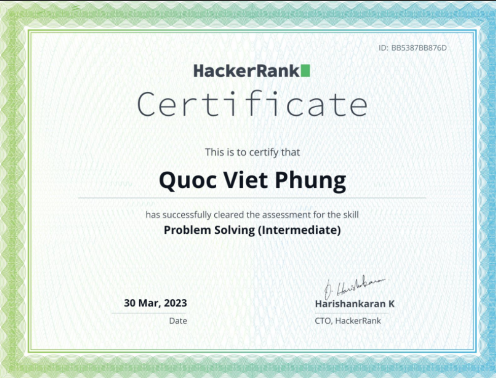
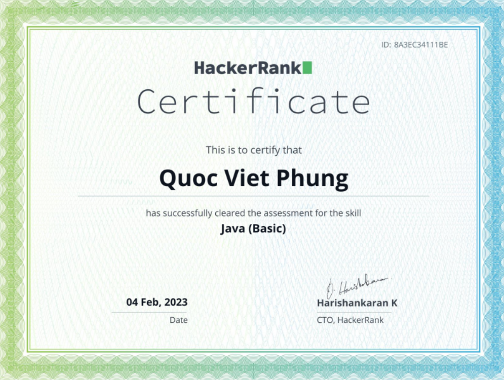
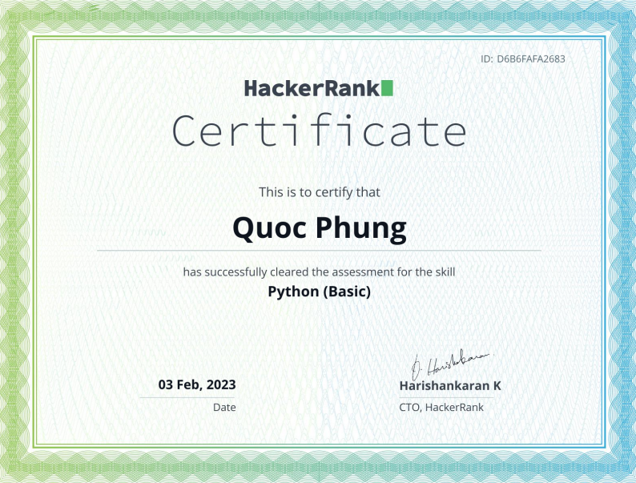

AI Consultant | Fullstack Engineer | Cloud & Data Enthusiast
Building thoughtful products that feel reliable from the first click.
I am Viet Phung, a software engineer with more than 4 years of experience at the intersection of AI, cloud computing, and fullstack development. With a Computer Science background from the University of Applied Sciences Muenster in Germany, I focus on turning ideas into clear, practical, and maintainable systems.
Wuppertal, Germany
About
Practical engineering, calm communication, and a bias for shipping.
I like building software that is useful, maintainable, and pleasant to use. My approach combines product thinking, hands-on execution, and a strong focus on long-term clarity.
I enjoy working across the stack, from interface details to backend systems and cloud deployment. I care about structure, reliability, and the small details that make a product feel polished.
Outside of engineering, I like travel, photography, and steady personal growth. Those interests keep my work grounded and help me design products with a more human perspective.
Current focus
- AI-assisted workflows and product automation
- Cloud-native app architecture and deployment
- Data-driven internal tools and dashboards
- Clean front-end systems with strong UX
Skills
Tools and technologies I use to move quickly without losing quality.
TypeScript
Python
React
Next.js
Node.js
Azure
Git
GitHub Stats
Open-source activity and language breakdown.
A quick snapshot of my GitHub profile and the languages I use most often.
Certifications
A few credentials that reflect my problem-solving foundation.




Projects
Selected work and the kinds of systems I enjoy building.
Featured project
my-ai-portfolio
A personal portfolio site that presents my background, skills, and contact details in one clean and responsive experience.
Live siteWhat I build
AI and workflow automation
Productive assistants, internal tools, and repeatable workflows that help teams move faster with less friction.
Discuss a projectEngineering focus
Cloud and data systems
Maintainable services, deployment-friendly architecture, and data-informed interfaces that are easy to operate.
How I workContact
Let's build something calm, useful, and polished.
I am open to consulting, collaboration, and product engineering work where quality and clarity matter.
Open for new conversations
If you have an idea, a product problem, or a system that needs careful engineering, feel free to reach out.